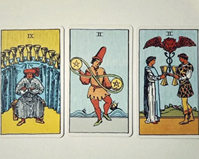
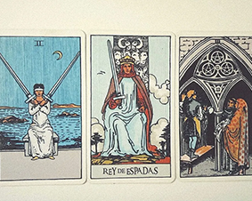
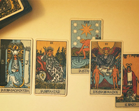
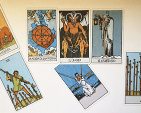
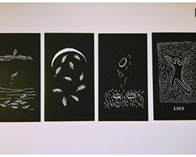
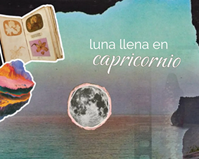
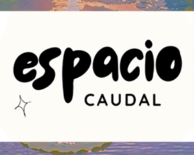

minilecturas y otros
Mini-lectura semanal 03.02.25
-equilibrar las aguas para naufragar en compañía-
Será una semana cargada de emociones y aprendizajes, un cierre de procesos que invita a reconocer cuánto creciste y a despedirte de lo que ya cumplió su ciclo. Podés sentirte abrumadx, pero el equilibrio...
Ver completoMini-lectura semanal 10.02.25
-Las nubes mas densas luego dejan ver el cielo+luminoso-
Al inicio de la semana puede sentirse cierta negatividad que paraliza, como si el ruido mental actuara de zona de confort. Sin embargo, tenés la fuerza para transformarlo en claridad si valorás...
Ver CompletoMini-lectura semanal 24.02.25
-La abundancia no necesita más que satisfacción para SER-
La semana se presenta intensa y transformadora: comienza con introspección y sensibilidad, un tiempo de gestar ideas o vínculos importantes, para luego abrirte al mundo con mayor energía y mostrar...
Ver CompletoMini-lectura semanal 03.03.25
-se iluminan los cuerpos ensombrecidos-
Esta semana se trata de iluminar lo oculto y enfrentar aquello que parecía excluido pero sigue vivo en tu interior. El Diablo señala estructuras y evasiones que piden ser vistas para poder soltarlas, y la clave...
Ver CompletoMini-lectura semanal 10.03.25
-Deshacer para resurgir en resonancia-
Esta semana puede sentirse difusa y agotadora, como si la realidad se deshiciera, pero ahí mismo surge la oportunidad de soltar viejas formas y transformarlas en algo más liviano...
Ver CompletoLuna llena en capricornio 11.07.25
¿que sostiene a la montaña a través del tiempo?
La Luna Llena en Capricornio, en el grado 19, ilumina la estructura profunda que sostiene tu vida. Al estar el Sol en Cáncer y la Luna en oposición, se revela un proceso de maduración...
Ver CompletoSi deseas suscribirte dirigite al sitio
-Blog Espacio Caudal En constante actualización-
“Un espacio de lecturas breves y poéticas, que combinan astrología, tarot y reflexiones emocionales para invitar a la introspección, el equilibrio y la conexión con uno mismo y con otros.”
Blog